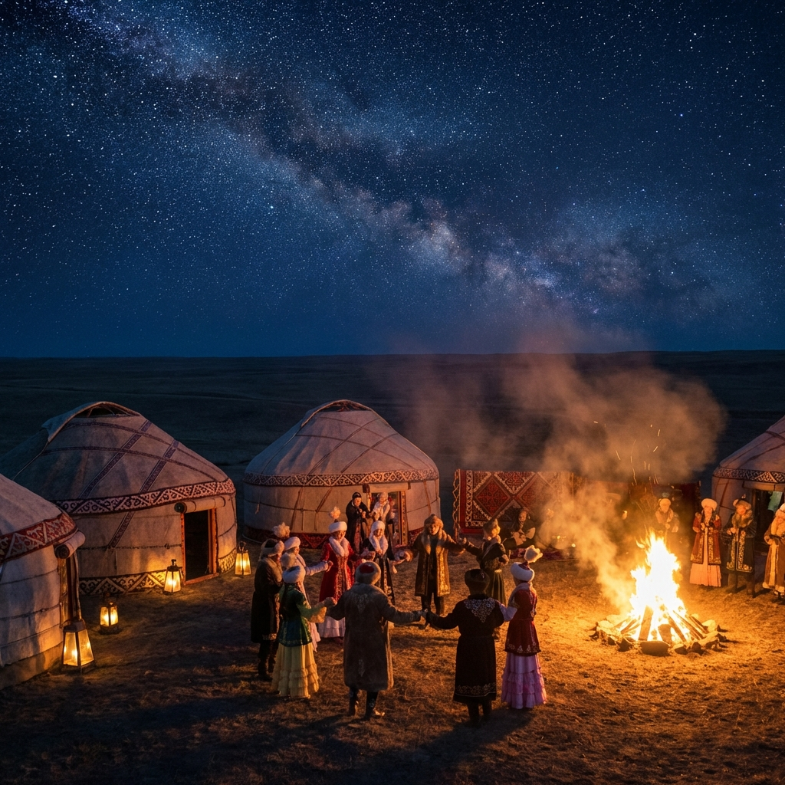

Наурыз Мейрамы
Ресми атауы: Наурыз: жаңару мейрамы. Бұл жай ғана «жаңа жыл» емес, бұл — ғарыштық циклдің жаңаруы. Зерттеушілер Наурызды "синкретті мейрам" деп атайды, өйткені ол зороастризм, тәңіршілдік және ислам мәдениетінің элементтерін біріктірген.
Әлеуметтік функция
Ренжіскендерді татуластыру, «Самарқанның көк тасы еруі» метафорасы арқылы қоғамдық келісімді нығайту.
Экологиялық аспект
«Бұлақ көрсең – көзін аш» дәстүрі арқылы табиғат пен адам арасындағы гармонияны насихаттау.